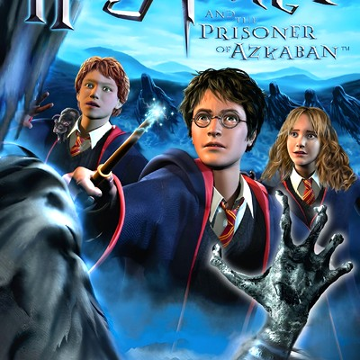
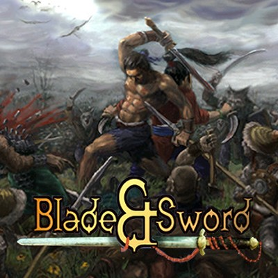
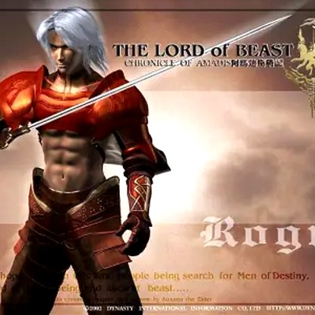
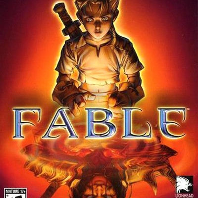

Bài viết mới nhất
Pokémon Yellow — Nguyên vùng Kanto nằm gọn trong mấy cái đĩa mềm
Không Game Boy, không tiếng Anh, không walkthrough — chỉ có giả lập chép qua đĩa mềm và những buổi tối cả xóm họp "chiến lược quân sự" để cùng phá đảo.
Worms World Party — Con game tớ nhớ ra nhờ tưởng Gunbound đạo nhái nó
Ba đứa hẹn nhau đợi nhà vắng người mới dám đạp xe qua chơi ké máy Pentium II — tranh nhau bàn phím, hú hét vì bom cừu bay, cười sặc vì tự bắn trúng mình.

Harry Potter and the Prisoner of Azkaban — con game dở mà tớ thương nhất
Máy nhà không chơi được, nên tối nào tớ cũng xin ngủ lại cơ quan bố — chỉ để được đi vòng vòng Hogwarts thêm vài tiếng.
Grandia II — Khi một tựa JRPG dám đặt câu hỏi về đức tin
Hệ thống chiến đấu IP và câu chuyện về đức tin lung lay — lý do Grandia II vẫn còn đáng nhớ sau hơn hai thập kỷ.

Blade & Sword — Con game mua vì đọc được cái tên
Hè đó hai anh em mua đại một con đĩa lậu vì đọc được cái tên. Chán muốn bỏ, cắn răng chơi tiếp — rồi phát hiện hệ combo múa chuột đã đời.

The Lord of Beast: Chronicle of Amadis — Viên ngọc không ai biết tên
Một con máy tàng của dì, một đêm mưa, và một trò chơi tiếng Trung tớ chẳng đọc nổi chữ nào — vậy mà in sâu hơn mọi game bây giờ.

Fable — Tựa game tớ thuộc lòng trước khi được chơi
Gần hai năm chỉ được "chơi" Fable qua mấy trang báo Thế Giới Game — rồi một mùa hè lớp 10 đổi lại tất cả.